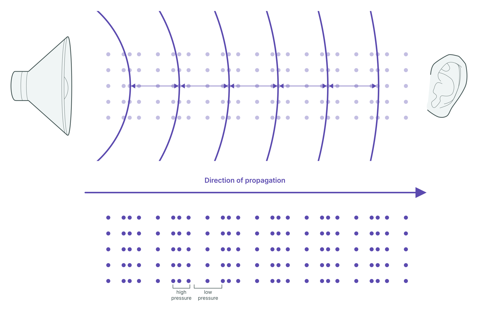
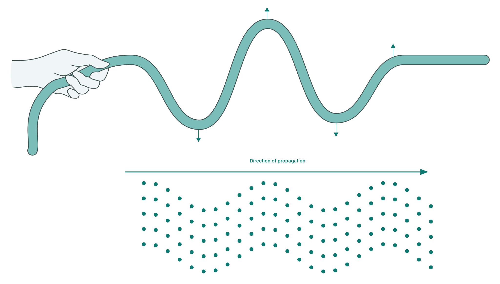

Module 3
The Mechanism of Shear Wave Elastography
Shear-wave elastography (SWE) infers myocardial stiffness (MS) from the velocity of a shear wave traveling through cardiac tissue. This module will walk you through the process — from definitions and wave generation, through ultrafast tracking, to its limitations and real-world considerations.
Learning Objectives
What You'll Learn in Module 3
Explain the difference between compressional and shear waves, and why shear wave velocity reflects myocardial stiffness.
Describe how acoustic radiation force and mechanical events during valve closure generate localized shear waves in myocardial tissue.
Explain why ultrafast frame rates above 1,000 fps are required to measure the velocity of shear wave.
Identify how viscoelasticity, anisotropy, and wall geometry affect shear wave measurements and their interpretation.
Module 3-1
Two Types of Mechanical Waves
Mechanical waves travel by passing energy from particle to particle. The two types relevant to tissue mechanics differ in one key respect: how particles move relative to the direction of propagation.
In a compressional wave, particles oscillate parallel to the direction of propagation, producing alternating zones of compression (high pressure) and rarefaction (low pressure). Sound is an example: a speaker pushes air forward and pulls it back, sending alternating high- and low-pressure zones outward. The ultrasound pulse in conventional B-mode imaging works the same way.

Figure 1. Compressional wave. A speaker producing alternating high- and low-pressure zones that travel toward a listener along the direction of propagation.
In a shear wave, particles move perpendicular to the direction of propagation. If you hold one end of a rope and flick it sideways, the disturbance travels forward along the rope, but the rope itself moves up and down.

Figure 2. Shear wave. Particle motion is perpendicular to the direction the wave travels, like a flicked rope.
One practical consequence of this geometry is that shear waves cannot travel through liquids. Because fluids offer no resistance to sideways deformation, they do not support shear wave propagation. Blood, pericardial fluid, and similar liquids act as barriers. Compressional waves, by contrast, travel freely through solids, liquids, and gases alike. This has direct implications for how shear waves are generated in myocardial tissue.
Why Shear Wave Velocity Reflects Myocardial Stiffness
The rationale for SWE follows from an asymmetry between the two wave types: when myocardial tissue stiffens, shear wave velocity changes, but compressional wave velocity does not.
Compressional wave velocity is determined by a tissue's resistance to volumetric compression. Soft biological tissues, including the myocardium, are nearly incompressible. This resistance changes little with mechanical state, so compressional wave velocity remains approximately constant at around 1,540 m/s regardless of pathological changes such as fibrosis and hypertrophy. Because this velocity does not change with stiffening, compressional wave velocity carries no information about myocardial stiffness, though its constancy is precisely what conventional B-mode imaging relies on to reconstruct images.
Shear wave velocity, by contrast, varies directly with a tissue property called the shear modulus (μ), a measure of resistance to sideways deformation (see Module 3-3). Stiffer tissue produces faster shear waves; softer tissue produces slower ones. Pathological processes such as fibrosis and hypertrophy remodel the tissue's composition and microstructure, producing a substantially higher shear modulus than healthy myocardium, and therefore faster shear waves. In soft biological tissues, shear wave velocity typically ranges from about 1 to 10 m/s.
This differential sensitivity — compressional wave velocity fixed, shear wave velocity varying with mechanical state — is the physical basis of SWE.
Same dot grid as below. Each column shifts left–right — the compressed/spread pattern travels in the direction of propagation.
Same dot grid as above. Each column shifts up–down — only the wavy shape travels in the direction of propagation.
Speeds shown are schematic, not to scale — real compressional waves travel roughly 150–1,500× faster than shear waves in soft tissue. Only the shear wave's speed responds to the stiffness slider; the compressional wave stays fixed, just as described above.
Summary
Mechanical waves can be compressional or shear, depending on how particles move relative to the direction of propagation. In soft biological tissues, compressional wave velocity is insensitive to tissue mechanical state, whereas shear wave velocity is governed by the shear modulus (μ). This asymmetry is the physical basis of SWE.